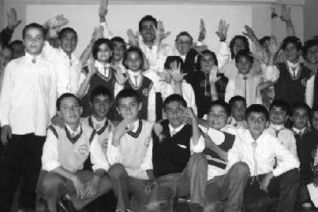

Sönen mumların emanet ettiği karanlıkları, gözlerindeki ışıklarla aydınlatacak koca yürekli kardeşlerimizi seyirci koltuklarından kaldırıp sahneye çıkarmaktır Türkiye Uğur Böcekleri Projesi (Gökhan Müftüoğlu)
Gökhan Kayseri'de uçan uğur böceğimiz. Çok kısa sürede Kayseri Sarız ve Pınarbaşı Yatılı İlköğretim Okulları'nda seminerler vererek kızardı ve kırmızı uğur böceği oldu. Güvenilir, dürüst, sağlam, gözleri gülen, yürekli uğur böceğimiz. Seninle gurur duyuyoruz.